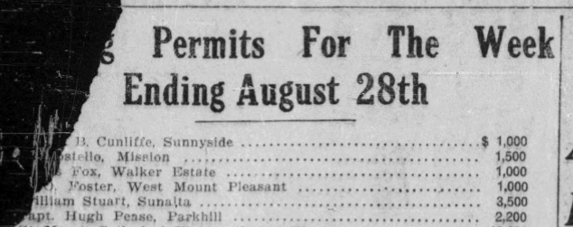
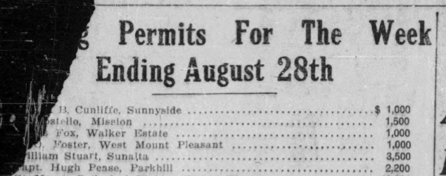
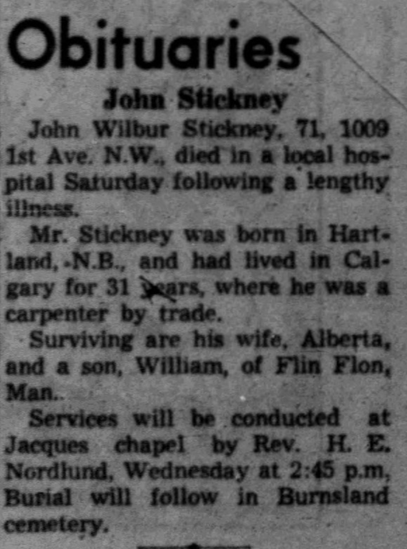
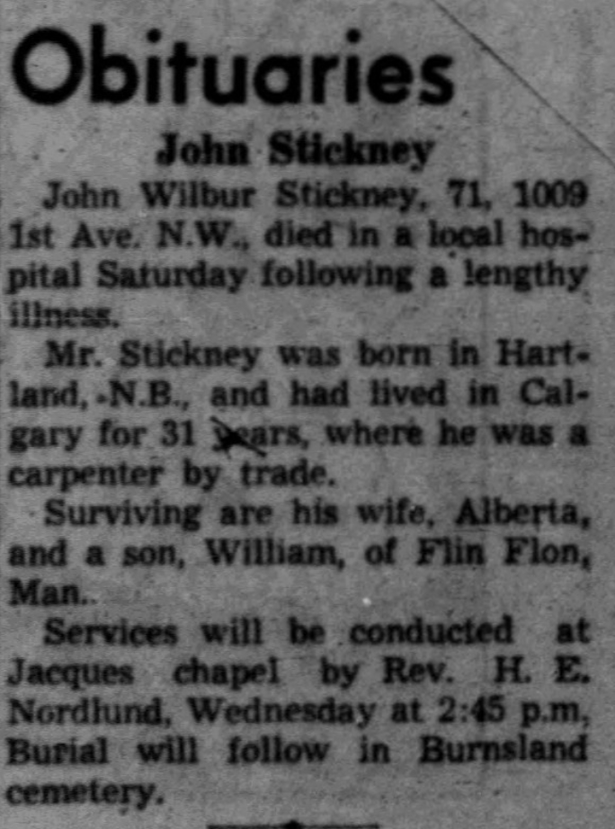

1891
Land Purchased: Samuel William Trott (Druggist)
Land Purchased: George (Lawyer) + Henry B. (Rancher) Alexander

The Coronavirus Pandemic of 2020-2021 forced hundreds of millions of people into their homes for extended times. Work. Sleep. Play. All within the confines of a single residence. I was one of those millions and I happened to be stuck inside a new home. Well, new to me; the house itself was almost hundred and ten years old.
A Century Home, sure, but not something anyone could reasonably consider "of historical significance". No one of great significance ever lived here, its construction is plain and modifications over time have largely erased its original layout and finishings. It's not going into a historical register, let's put it that way.
Still... all this time in a building forms a connection and a home at this age needs some love and some of that love took me into the "bones" of the house. While adding insulation to the attic, I see the sawn lumber someone dragged from the saw mill to frame the home. While tearing out a damanged kitchen backsplash, I expose the original mason chimney which would have heated the home. While building a partition wall, I see the white oak planks which originally covered the floor. Leftover remants of knob-n-tube style wiring and cast iron pipes, they all appear, and all this time and all these vestiges make a person wonder: what is the history here? Who constructed this home which still stands five generations later? How many lives ran their course between these walls?
As it turns out, researching a home is not possible without also researching the society which constructed it. Sleuthing through legal documents reveals each names as a breadcrumb into an entire thread of history. Scanning through newspaper archives reveals the attitudes and media which people of the time held and consumed. This is where I found the true value in my exercise: the history of this thoroughly average home is the history of the city it was built in. The very plainness and averageness of the home made it accessible, made it possible for such a wide spectrum of society to have come into contact with it. Ranchers, the Prairie Nouveaux Riches, Oilmen, Land Speculators, Businessman, Booms, Busts and Rejuvination, the Working Class. The timeline of the city is embedded in the story of this home, precisely because of this plainness.
This is a history of Calgary, as told through My Home.
The primary sources used to reconstruct this history include land title searches, buiding permit records, the archives of the Calgary Herald, and directories for the city of Calgary, and other written sources. Land titles are legal documents which describe provide a legal description of the land, its owners, and any leins or caveats on the land.
I acknowledge that this is a history is biased by of the society which created these records. I will not address thousands of years of history in this land by Aboriginal peoples, but I do acknowledge this story takes place on Treaty 7 land.
The reader may find it useful to understand legal terms for land division in western Canada. Land here is surveyed and divided into sections, which are square mile plots of land. These sections are further divided into quarters, following quadrants (NW, NE, SW, SE). Development sites are surveyed according to blocks, which are what we usually think of as "city blocks". These blocks and then divided into lots. Sections, blocks, and lots are all numbered in order. The home in this story is located in section 20, block 5, lot 29.
The land at the confluence of the Bow and Elbow rivers was not settled by Europeans until 1875, when the North-West Mounted Police established a post in the area.
The land north of the Bow river was not in private hands until later still, and lot 29 was not privately owned until 1891. In that year the first title was issued to Samuel Trott and covered the southern half of section 20, which at that time was undeveloped land. Trott was Calgary's first pharmacist, and this land was purchased during the last year of his life, perhaps as an investment of his money made in retail. Curiously, a title for half of this land was issued the same day to the two Alexander brothers, one a Lawyer and the other a Rancher. Perhaps Trott was able to secure access to this land and then immediately speculate on it and sell part of it for a profit.
Samuel W. Trott, 1870s

Herald, 1928
When Mrs Trott died last year, she willed to the Calgary General Pio

The Alexander brothers, George and Harry, had originally immigrated from Ireland in 1884. They established 2 Dot Ranch, near Nanton, but it is unknown if they directly ranched on the land purchased from Trott. At any case by 1901 both brothers had decided to leave Western Canada for Africa, and Ireland, respectively.
Near the turn of the century most the land in present-day Hillhurst came into possession of the Riley family, headed by the English immigrant and rancher Thomas Riley. A land title dated 1902 listed the wife, Georgiana Jane, as the land owner. It is unknown why this land was listed under her name while her husband was still alive at the time. In 1906 Georgiana had the section subdivided into 25 foot lots and upon her death the following year the family's sons inherited and arranged for the annexation of the land by the city.
Family of Thomas and Georgiana Jane Riley, 1897
Land Purchased: Samuel William Trott (Druggist)
Land Purchased: George (Lawyer) + Henry B. (Rancher) Alexander
Land Purchased: Georgiana Jane Riley
The Canadian Prairies experienced a massive economic boom in the years leading up to the first World War. Irrigation of farmland, a swelling population of European and Eastern Canadian migrants, and investment from railways all contributed to multiplying the population of the Prairies, and of Calgary, many times over in a few short years. With a growing population, the city expanded its land base into its first suburbs across the Bow River. The installation of street car lines allowed the growing population to live further from the city's center and high rents incentized the building of new homes in the new suburban communities. A housing shortage pushed land values increasingly higher and land speculation was pervasive. At the boom's peak in 1912, around 2% of the entire population was employed as realtors.
The transaction history on the home tells the story of this speculation. In the space of two years the land title for lot 29 exchanged hands no less than five times, first as a bundle of two lots and then as a single lot. During the space of a year the value of the lot doubled from $350 to $750. The speculators involved in these transactions held a range of occupations including builders, retailers, and a future oilman.
Land Purchased: Philip Murphy
Land Purchased: Rebecca Robinson (Spinster)
Land Purchased: Thomas Arnold Burr (Builder)
Land Purchased: Jonathon O. Trotter
At the peak of the boom in 1912, every issue of the Calgary Herald carried multiple full pages listing real estate investment opportunities. One regular section was adorned with the banner "Mail this to some Friend in the East". At least one Calgarian, Samuel Foster, appears to have a have done exactly that.

Banner found in daily issues of the Herald.
Samuel Odber Foster (1869 - 1950) was born in Coldstream, New Brunswick and came west in 1905 with his Wife, Maria Rideout, and their children. Although he was a farmer in New Brunswick, once in Calgary he took up work as a teamster and then as an independent builder. He helped construct several homes during Calgary's first housing boom prior to WW1 and was involved in the local Hillhurst Baptist Church.
His name is attached to multiple building permits, some of which were published in newspapers as part of larger notices of building activity. He obtained permits for at least two homes in 1912, including his own residence at 844 Fourth Avenue NW in March. The second permit was for a $1500 residence on Lot 29, Block 5 in Upper Hillhurst. The lot had piped water and sewer connections at the time, although the home was likely built with no electricity or natural gas hook-ups.
Foster purchased lot 29 along with the newly arrived John Wilbur Stickney. Stickney, a carpenter by trade, had emmigrated from the same New Brunswick county in 1912. It is likely that Stickney was encouraged by bring his family westward by Foster, who was witnessing a building extravaganza in the city. Both Stickney and Foster remained long term residents of Hillhurst and the pair may have worked together on other homes in the area. 

 

Land Purchased: Samuel O. Foster + John W. Stickney (Builder, Carpenter)
The original house plans have not been found but much about the home's original construction can be inferred based on traces left within the home as well as looking at contemporary plans and construction techniques from the time.
Advertisements posted during the 1920s describe the home as a "Modern Five Room Cottage". "Modern" was an important term here as "modern" construction techniques of wooden framing, plaster finishes, and concrete foundations, and piped sewer connections had only recently been introduced to the city's working class housing stock in the 1900s and 1910s.
A common housing form used throughout Calgary's first residences was the bungalow, a style popularized and imported from California and elsewhere in North America. As described in Homes In Alberta, "While there was no standard interior plan for bungalows, all were laid out an open plan with the bedrooms grouped around a large living/dining area, which was either a single room or two rooms divided minimally with arches or built-in features such as low shelves. The kitchens were small and located at the rear of the house. The bungalow avoided using vestibules, parlours, and pantries and applied efficient design and extensive use of built-in furniture and cupboards in an effort to increase livable interior space." This form was adapted for the local climate with the additions of basements, glassed porches, steeper roof pitches.
This building philosophy can be seen in the plan below, which was published in the Calgary Herald. This layout closely matches the layout of my own home, with the original placement of a covered veranda, bathroom, bedrooms, kitchen and most windows all aligned. This plan includes a second chimney for a living room fireplace, which is absent in my home, although piping for a burn wood stoving in this room did exist. Note the open plan between the living and dining areas, whose outlines are still defined by an archway or partial enclosure.
Bungalow layout, Herald, 1912
Simplicity in design was prized both for aesthetics and cost, although some decorative features were common, such as dormers and gingerbread millwork. Two plans below illustrate the simple design of many bungalows. These plans featured a pyramid, or "hipped", roof which is the style used on my home.


(Left) Bungalow plan was advertised in a lottery as a free home to encourage development in a new subdivision. Note the decorative dormer protruding off the attic. (Right) Another bungalow plan featuring a hipped roof, and kitchen and chimney placed near the rear.
The interior framing technique in my home is illustrated by yet another plan. This bungalow features a chimney placed in the home's center, which anchors a support beam on either side.
Bungalow layout, Herald, 1912
House plans for working class residences came from a variety of soruces, including some companies such as the BC Mills Timber and Trading Company and Aladdin, supplied pre-fabricated house from a booklet of available plans. Companies of this sort owned their own timber mills and sold planning booklets for a small fee. Their profits came when the timber and building supplies were ordered to construct a booklet plan. Another source was the Herald, which promoted house plans and construction tips from local firms.
Independent builders like Foster and Stickney would often copy and adapted these plans to fit their situations, which appears to be the case for my house.
The home's construction came at the tail end of the housing boom. In 1913, British capital became more difficult to acquire, slowing construction. By the end of the year building activity had fallen and the advent of WW1 the following year drew people and resources out of the region. For several decades the back alley of the home effective marked the edge of development for the city's north west. It is unclear if the home was originally built to be sold off but Foster and Stickney remained the owners until 1925 while several families rented the home.
Building Permit Issued: Samuel O. Foster
House Constructed: Samuel O. Foster + John W. Stickney
The first family to occupy the home was that of Charles Randolph Grant, a blacksmith and recent emmigrant from New Brunswick. Co-incidentally, Grant was from the same county as both Foster and Stickney and had emmigrated to Calgary that year. It is possible that the three knew of each other and that Foster, who had come to Calgary in 1905, encouraged the other two families to join him in the West.
Whatever the reason for Grant's decision to move West, the family only stayed at this address for one year. The 1916 census records the wife, Mary, as living in Hillhurst with their five children but "widowed". Charles, however, lived until 1925, suggested the couple were actually separated. One can speculate that the stress of their move out West, drawn in by promises of a boom only to be met with a bust, contributed to their separation. Indeed, the times must have been stressful for many and the population of the city shrunk significantly from its peak in the years to follow.
During the War the family of Alfred Leary occupied the home. Alfred worked as a driver (teamster) and his wedding to Margaret Blythe is preserved in the Glenbow Archives. In 1915 his employer was P. Burnos & Co., a large ranching and meat packing company owned by businessman and later Senator Patrick Burns. Another member of the household, a brother Clement, served and died on the Western Front of the War.

Leary Wedding Photo, 1905
House Rented: Family of Charles Randolph Grant
House Rented: Family of Alfred Leary
The home was unsuccesfully advertised for sale during 1923 and 1924, perhaps reflecting the depressed market which existed after the pre-war boom. The home was finally sold in 1925 to Arthur Sheane, who had rented the home for the previous five years.
House Rented: Arthur Sheane
Land Purchased: Arthur Sheane
Land Purchased: Charles Wilfred + Irene Horsfield
Land Purchased: Marius J Pederson
Land Purchased: Robert (Janitor) + Jean Warner
House Rented: Robert W & Jessie Flewelling
House Rented: Joseph J + Fay Eamon
House Rented: Ernest + Edna Claxton
House Rented: Harry and Anne Prokopshin
The energy crisis of the 1970s elevated oil prices throughout the decade, providing a massive economic injection to the city. Housing prices climbed and the Warner family must have decided to cash out, selling the home for a price four times greater than their intial purchase. The sale history of the home during 1977 reflects the pressure on housing in the city. During the space of two months, three land titles were issued to the property: first to developer John Falconer, followed by an investment company, before finally being sold to the Richardson family.
A number of modifications took place to the home at this time. The front veranda was enclosed and an addition constructed on the home's rear to increase the living space from 700 to 1000 square feet.
Land Purchased: John A. S. Falconer (Developer)
Land Purchased: Holly Investments Ltd
Land Purchased: Douglas Kendall + Shirley Ann Richardson
Land Purchased: Irene + Debra Shandera
Land Purchased: Marilyn Prole
Land Purchased: Judith Johnson
Land Purchased: Dylan Grandmont + Melissa Langedahl